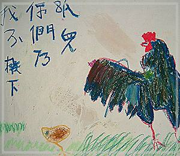

生日 乾媽吳麗英
因為Paul和素娥的慷慨，我與Lily結緣，成為她的乾媽。因為她，我才有機會接觸人生階段中最初的美好。
心中充滿期待地參與著迎接她到來的準備工作，在她初到人世時，也嚐到擁抱新生命的喜悅，Lily是唯一曾讓我抱到手酸却捨不得放下的孩子，當時我也跟著分享著為人父母的愉悅。
自Syracuse回台後，很慚愧的，每年只有在Lily生日及過年時，我這個乾媽才心虛地出現，但Lily和妹妺總是不計較地、熱情地接受我這個不太盡職的乾媽。其實乾媽只是一個稱謂，我們更像是小朋友與大朋友的關係；我們可以一起窩在房間�娷蝶u著玩，胡亂說著亳無意義的話語，姊妹倆也總是搶著述說在學校�堨肮〞甄I滴以及她們為自己設想的未來。即使在Lily生病的這幾年，每當她身體狀況較好，跟著爸爸到辦公室來時，也許身體上的病痛改變了她的外貌，但她表現的其實與健康的孩子一般，更有勝於一般孩子的懂事，有時待的時間長了，她還會主動要求幫忙做事，身體上的病痛也並未改變她對人生美好的盼望，她還曾偷偷透露有關她喜歡的小男生的秘密，反而少有對生命的怨言，在她身上看到的勇氣讓我們這些大人感到汗顏不及呀!
過去這一年�堙A公公和父親相繼去逝，我也因此刻意地避開Lily，只在她的畫展上出現。自覺與她生疏了，但看到在場有這麼多真心關愛Lily的朋友，看到站在台上認真展現自己的Lily，看到她並未因身體上的負擔日益加重而侷限了自己的生命，反而能引起這麼多的共鳴，真的為她感到高興與驕傲。
我總以為生命的內涵遠重於生命的長度，雖然不免為Lily尚未體驗到的部份感到遺憾，也為這樣的過程感到心疼，但生命中最美好的我想她都沒有錯過，只是我們失去了見證這樣一個美好生命的成長機會。我也寧願相信對我們而言，這是一個損失，但對Lily來說，是一個全新的開始，希望她帶著眾多親人與朋友的祝福，重新展開屬於她的旅程。
|  |
•我不撇下你為孤兒 病房裡牆上總有許多畫作或聖經箴言，我覺得那些畫很好看就把它們畫了下來！即使再辛苦都會有會有人照顧我、安慰我！ |